4DK NO. 1 TEAM
SAN ANTONIO SPURS
The Spurs remain at the top of our editorial rankings, with the Lakers right behind them.
12–2 · #1Thirty teams. Original 4DK analysis. Our MVP and rookie races. The same magazine presentation as our November 10 edition.
The Spurs remain at the top of our editorial rankings, with the Lakers right behind them.
12–2 · #1Boston climbs to third, Philadelphia sits fourth, and Houston rounds out our top five.
Minnesota without Ant. Memphis with Cam Boozer. Miami's resurgence. Oklahoma City's injury burden.
Records reflect our approved November 17 working board. Previous rank compares with the November 10 published edition. Team photos and original scouting notes return in the familiar 4DK layout. Historical stat lines have been removed rather than presented as current.

The 12–2 record and a twelve-game winning streak make this the league's most convincing early-season two-way statement. Wembanyama's rim deterrence changes opposing shot selection, but the guards' ability to create against pressure determines whether that defensive advantage survives a seven-game series.
THE 4DK DEEP DIVE: San Antonio is not merely winning because Wembanyama is a matchup nightmare. His length lets perimeter defenders apply pressure knowing the back line can erase mistakes, and his offensive range forces opposing bigs into decisions they rarely face. Fox gives the Spurs a downhill organizer who can attack before a defense gets set; Harper and Castle offer different ways to pressure the paint and move the ball after the first rotation. The test is not whether this group can dominate an ordinary November game. It is whether the Spurs can manufacture efficient shots when a playoff defense takes away the initial action, limits transition, and dares the supporting cast to make quick decisions. At No. 1, our standard is championship-level adaptability, not just the best early record.
The Spurs can dictate games with Wembanyama's rim protection, but their next challenge is offensive versatility. When opponents load up on the paint, Fox must win the first advantage and Harper and Castle must convert it into clean looks. A 5–0 stretch is a statement; sustaining half-court execution is what can keep San Antonio at No. 1.

Luka's scoring is the headline, but the Lakers' 12–2 start is about offensive orchestration. They must show that the half-court offense can stay unpredictable against switching defenses and that defensive effort travels on the road.
THE 4DK DEEP DIVE: Luka's ability to dictate the pace is the engine, but the Lakers' ceiling depends on the possessions after he draws two defenders. Reaves has to punish closeouts without holding the ball, and Kessler's screening and interior defense must create value even when he is not finishing a play. A 12–2 start gives Los Angeles the right to talk like a contender; it does not eliminate the question of how this group handles opponents who switch everything, load the nail, and make Luka work on defense. The most encouraging version of the Lakers is not simply Luka scoring forty. It is a balanced offense that gets stops, rebounds, and early offense before opponents can build their preferred matchups.
Luka's scoring and passing can bend any defense, but a 12–2 start also puts a spotlight on the possessions when he gives up the ball. Reaves must turn those openings into quick decisions, and Kessler's screening and rim protection have to travel against bigger frontcourts. The Lakers are winning; their playoff-style defensive discipline is the next test.
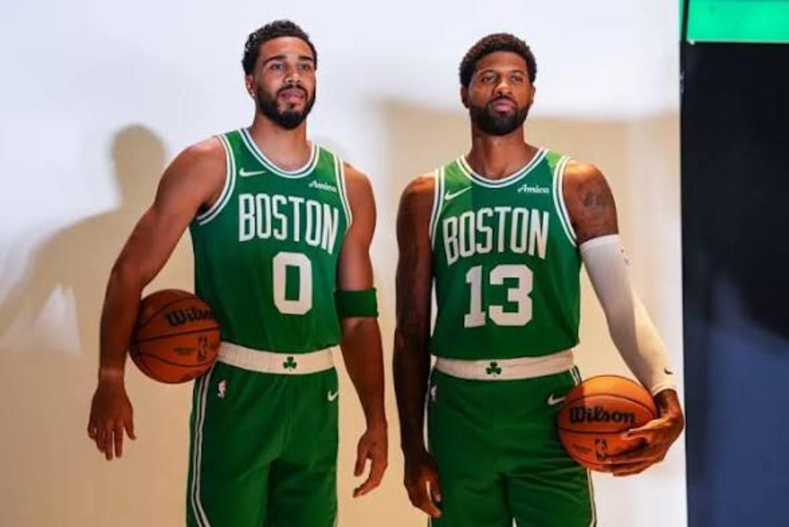
The 115–105 loss to Orlando ended a six-game streak and offers a useful test rather than a reason to panic. Boston's ability to recover its defensive discipline and manage difficult wing matchups will tell us more than the result alone.
THE 4DK DEEP DIVE: Boston belongs at No. 3 because its case is bigger than a single winning streak. Tatum and George give the Celtics size and creation across the wings, while Pritchard can change the tempo with quick decisions and deep shooting range. The Orlando loss matters because it highlights the challenge: teams with length can disrupt Boston's first action and force the Celtics to find offense without relying on a star bailout. Our evaluation also has to account for defensive discipline, bench minutes, and whether the ball continues to move when the first option is denied. We have discussed Boston as a possible top-three seed, and this is why: the talent and tactical options are there. What remains to be proven is that the group can sustain that standard through injuries, matchup changes, and a full playoff-style series.
Tatum and George give Boston multiple ways to manufacture a good shot against switching defenses. The question is whether Pritchard and the supporting rotation can maintain ball movement and perimeter pressure when those stars sit. If the Celtics defend without fouling and win the non-star minutes, their top-five case strengthens.
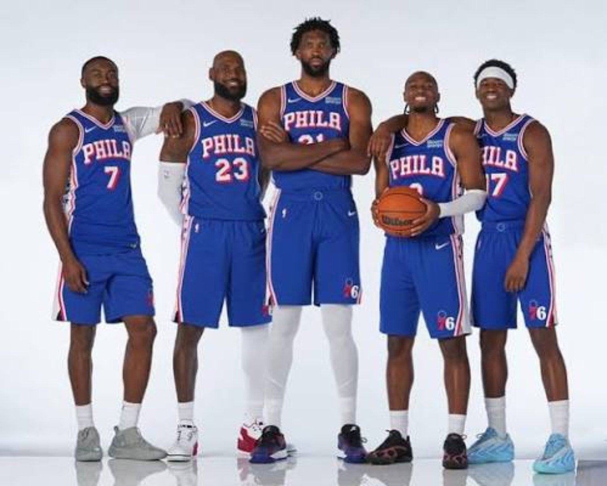
Philadelphia's 135–123 win over Brooklyn, with Embiid and Jaylen Brown leading the way, reinforces the ceiling of its scoring options. The challenge is getting consistent stops when the offense slows and keeping the stars' workloads sustainable.
Maxey gives Philadelphia pace, while James and Brown can punish switches with size and shot creation. The next leap is defensive continuity: the Sixers must get back in transition, protect the weak side and manage Embiid's workload without surrendering the paint. The talent says title contender; the collective stops must prove it.
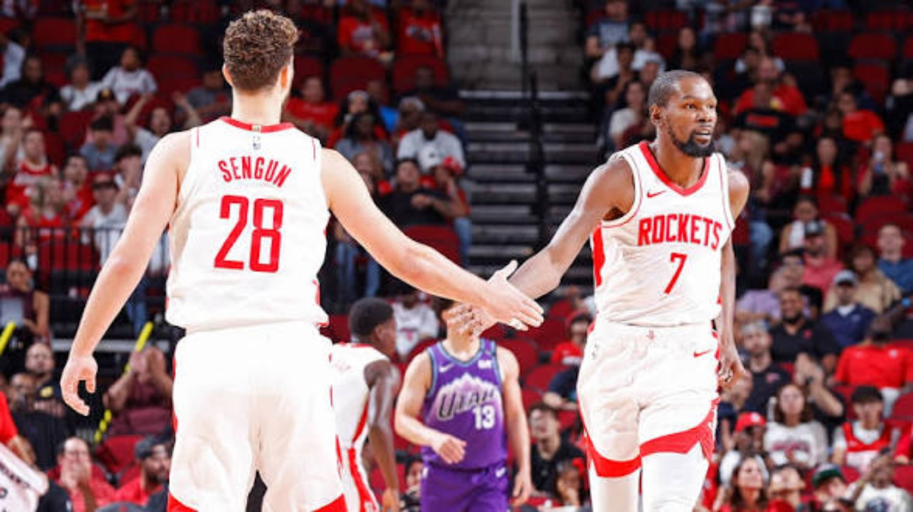
Miami's 128–110 win exposed Houston's vulnerability when its preferred physicality does not control the tempo. Sengün can punish mismatches, but Houston needs perimeter resistance and faster counters to opponents' runs.
Şengün's passing from the elbows and Durant's isolation scoring are complementary weapons, but the Rockets are most dangerous when Amen's cutting and transition pressure connect them. Houston must avoid possessions that stall into a single difficult jumper. Sharper defensive rebounding and better late-game spacing can reverse this week's slide.

Minnesota beat Portland 106–98 with Terrence Shannon Jr. scoring 34. Winning without Edwards speaks to collective defensive habits and roster depth; the bigger question is how Ant's eventual return enhances rather than interrupts this rhythm.
With Edwards unavailable, Minnesota's offense has to be more intentional. LaMelo can create early advantages, but the Wolves need cutters to move on time and Gobert to finish possessions at the rim and on the glass. Their 8–3 record shows resilience; maintaining defensive structure as the offense changes is the real measure.

Cam Boozer's 29 points powered the 136–120 win at Washington. Memphis' offense is proving that a rookie's passing and scoring instincts can accelerate a young group, but transition defense and consistency against elite opponents remain tests.
Jerome's scoring has given Memphis a new organizing force, while Boozer can punish mismatches without stopping the ball. Edey has to control the glass and protect the paint when opponents test the Grizzlies' size in space. The key is making the rookie's versatility and the veteran guard's creation work together late in close games.
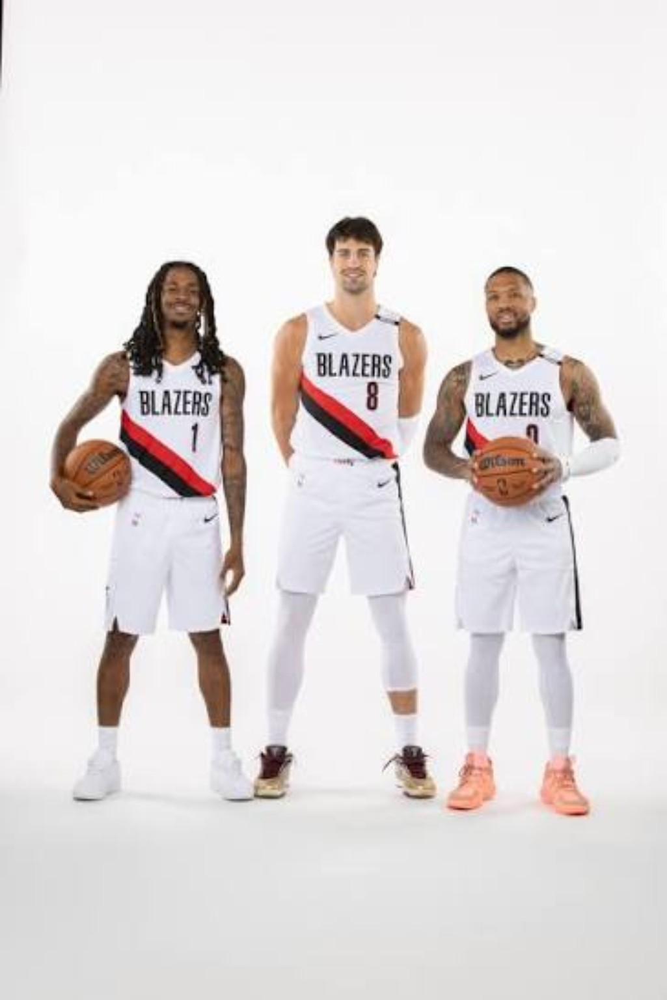
The 106–98 loss at Minnesota illustrates why Portland's promising start still needs late-game offensive counters. Deni's creation, Dame's experience and Clingan's interior presence can give this team multiple identities if they mesh.
Avdija's ability to push after rebounds and Lillard's range give Portland two very different ways to initiate offense. Clingan's screening and rim protection are essential when the pace slows. The Blazers can keep surprising teams if they defend without overhelping and resist settling for contested jumpers in the final minutes.
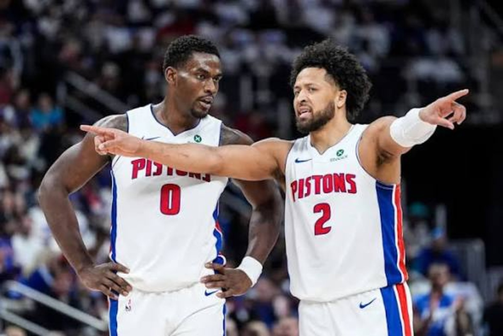
Detroit's 8–4 start deserves credit, but its recent uneven stretch asks whether Cade's creation can remain efficient when defenses crowd his lanes. The Pistons need defensive possessions finished with rebounds, not merely initial stops.
Cade has to balance his own scoring with early decisions that get teammates attacking a tilted defense. Ausar can turn stops into transition offense, and Reed's interior activity gives Detroit another physical edge. To rebound in the rankings, the Pistons need cleaner half-court possessions when opponents take away the open floor.
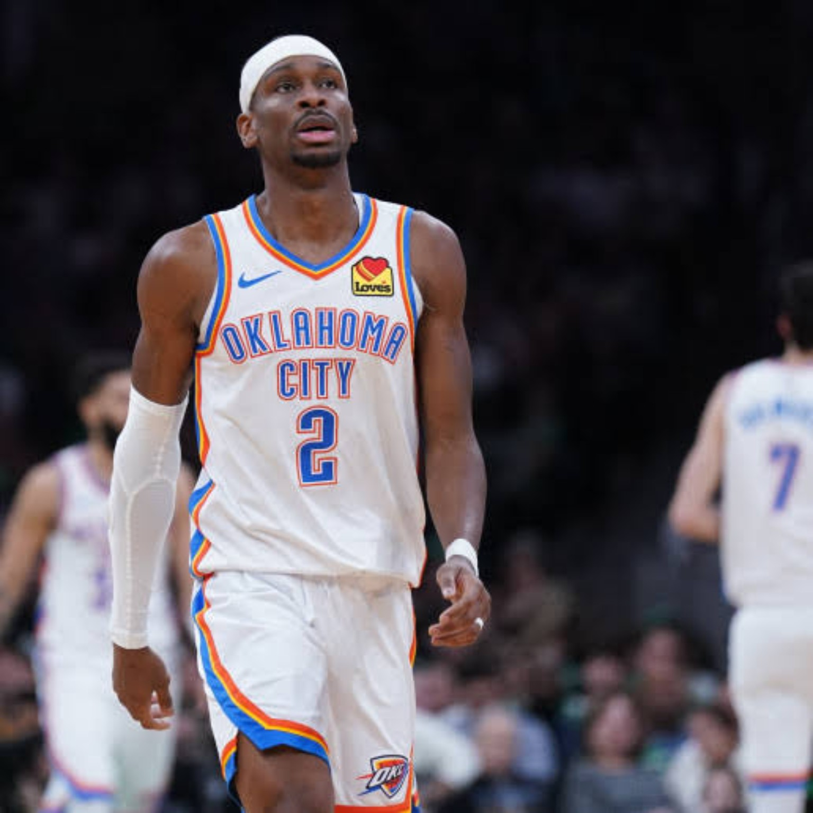
Shai's 37 against Sacramento ended a three-game skid. Oklahoma City's injuries have pushed too much creation onto one player; the next phase depends on complementary ball-handling and defensive continuity.
Shai remains the late-clock solution, but Oklahoma City's ceiling depends on how consistently the supporting guards keep the ball moving when defenses load up on him. Holmgren and Hartenstein have to own the glass and erase mistakes behind pressure at the point of attack. That balance will determine whether this surge holds.
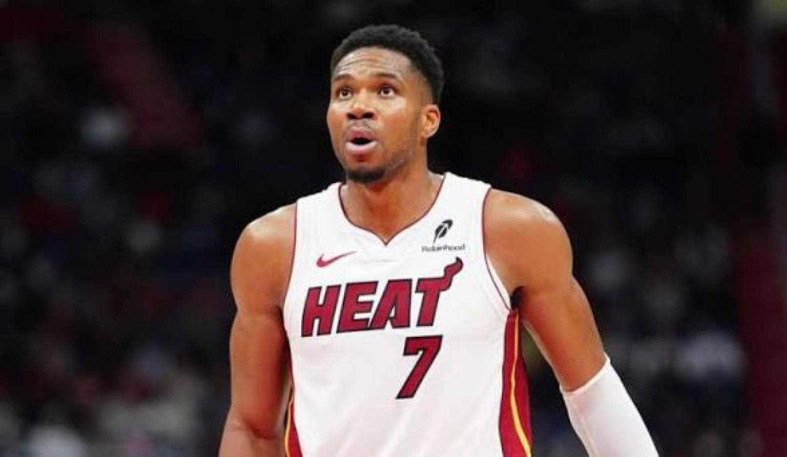
Five straight wins, capped by a 128–110 victory over Houston, put Miami back into the conversation. Giannis and Bam can overwhelm the paint, but the larger story is whether the guard play and spacing make their partnership scalable against contenders.
Giannis and Bam can make the paint feel closed to opponents, but Miami needs a clear offensive plan when defenders pack that same area at the other end. Cutting, quick reversals and timely perimeter shooting are essential. The Heat's rise depends on converting elite frontcourt talent into cleaner possessions and fewer defensive breakdowns.
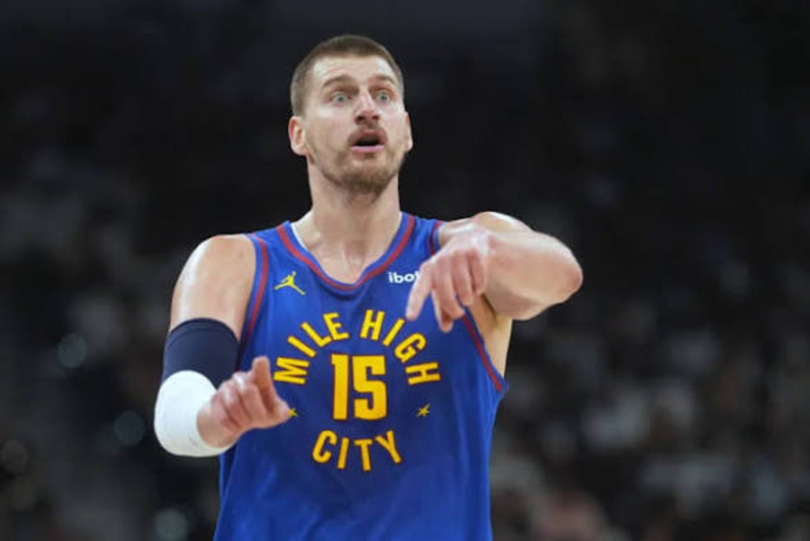
Phoenix's 117–105 win in Denver underlined the Nuggets' inconsistency. Jokić can stabilize an offense, yet Denver needs more dependable perimeter defense and secondary scoring before it belongs above the surging teams.
Jokić can solve almost any coverage, but Denver needs Murray's downhill threat to keep defenders from sitting on passing lanes. The supporting wings have to cut decisively and make open shots rather than watch the two stars operate. A more consistent defensive effort is what separates a dangerous Nuggets team from a true top-tier one.

Golden State's 115–94 loss at New Orleans was its third straight despite Yaxel's 28 points. Without Steph, the Warriors must create cleaner early offense and avoid putting an unrealistic scoring burden on their rookie.
Curry's off-ball movement still creates the first crack in the defense; Lendeborg's value is making something happen after that first rotation. Golden State needs Podziemski and the rest of the guards to defend the point of attack and keep turnovers low. The Warriors' ceiling rises when their rookie impact is more than a scoring headline.
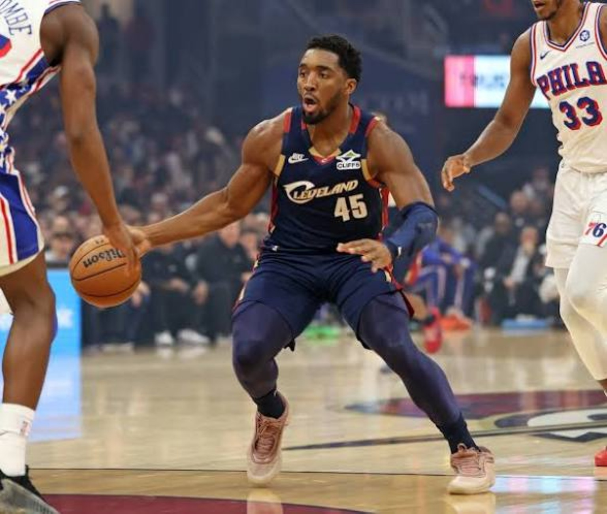
Donovan Mitchell's 39 in a 126–115 win over Chicago shows Cleveland's scoring punch. Defensive consistency and support around its lead creator are what separate a dangerous playoff opponent from a true East contender.
Mitchell and Harden can generate a quality shot against a set defense, but Cleveland has to make sure their possessions do not become alternating isolations. Mobley's mobility should anchor a more disruptive defensive identity. The Cavaliers can rise quickly if the guards create for each other and the team wins the rebounding battle.

New York has enough physicality to make games ugly and win anyway. Its ceiling depends on getting consistent perimeter creation without sacrificing the defense and rebounding that have defined its best stretches.
Brunson and Towns give New York a dangerous two-man foundation, but the Knicks' identity cannot depend on trading difficult jumpers. Hart's rebounding and Anunoby's versatility must turn defense into extra possessions. The path upward is controlling the physical parts of games while preserving enough spacing for Brunson late.
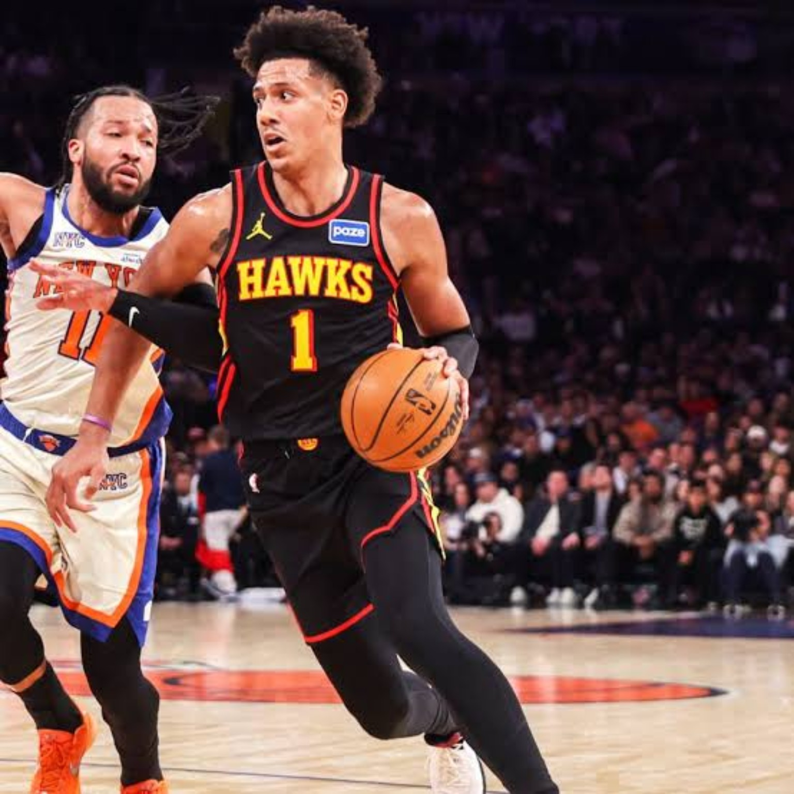
Atlanta's 113–106 win in Milwaukee keeps its positive momentum alive. The Hawks need to turn playmaking and wing activity into reliable defensive rotations, especially when opponents force them to execute late.
Johnson's transition play and connective passing are the foundation; Alexander-Walker's defense can create the turnovers that fuel it. McCollum supplies a half-court release valve when opponents take away the open floor. Atlanta needs to improve the quality of its defensive possessions, not just the speed of its offense.

Orlando's 115–105 win at Boston is a statement result. Franz's point-forward versatility can break conventional matchups; the question is whether the Magic can replicate that shot creation and floor balance against different defenses.
Wagner's versatility and Bane's shooting should give Orlando more ways to stretch a defense, but the Magic must create advantages before the shot clock becomes an emergency. Banchero's availability changes the ceiling, not the need for better spacing and ball security. Their defense has to generate enough stops to stabilize the offense.

Dallas' 7–7 record reflects an unsettled team with genuine individual talent. The challenge is turning flashes from its creators into repeatable half-court possessions and reducing the defensive breakdowns that erase good stretches.
Flagg's breakout scoring is only one part of his impact: his size, help defense and ability to attack a rotating defense can lift everyone around him. Irving must provide a steady late-game counter, and Gafford has to finish the possessions Dallas forces opponents to miss. The Mavericks' next step is making that balance repeatable.
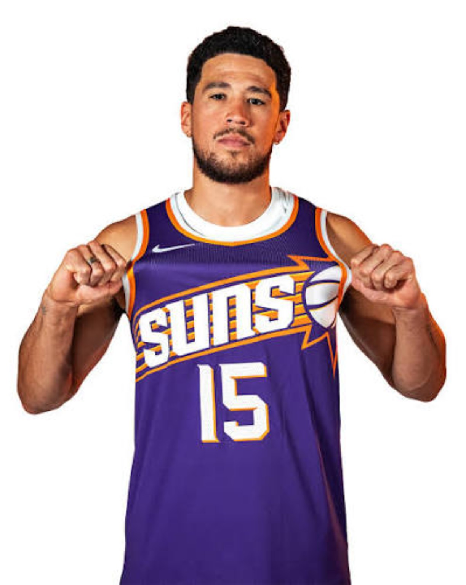
The 117–105 road win in Denver is a needed step for Phoenix. Its challenge is to establish the same physicality and shot discipline over several games instead of treating one impressive result as proof of a turnaround.
Booker can control tempo and Green can create bursts of speed, but Phoenix needs more possessions where those skills complement rather than alternate. Brooks must set a defensive tone without giving away fouls. Until the Suns rebound consistently and communicate on rotations, their individual shot-making will not be enough to change the ranking.

Toronto's 5–8 start leaves little room for empty possessions. Its best pathway is connected defense, transition opportunities and purposeful ball movement rather than asking one scorer to solve every set.
Barnes gives Toronto the ability to switch, pass and attack from multiple spots, while Quickley can push tempo before a defense gets organized. Barrett must turn those advantages into efficient drives. With Kawhi's availability an ongoing factor, the Raptors need a dependable identity that survives changes to the starting five.

Indiana's 5–9 record does not erase the value of its roster, but availability and continuity have limited its ceiling. The Pacers need to protect the ball, rebound more forcefully and keep a realistic path toward the playoff chase.
Haliburton's passing is most dangerous when teammates run hard and cut before defenders can recover. Siakam offers the half-court answer when transition chances disappear. Indiana needs better defensive resistance at the point of attack and stronger rebounding to give its offense enough possessions to matter.
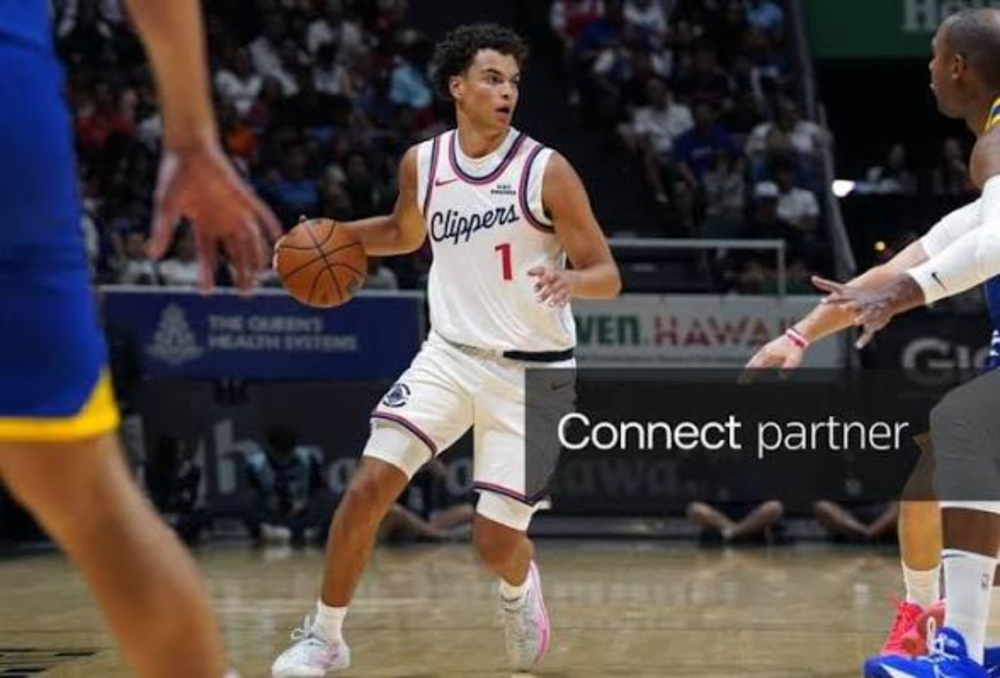
The Clippers' 4–8 record reflects an uphill start even after their win over Charlotte. They need healthy rotation continuity and better point-of-attack defense before projecting a sustained run.
Garland can organize the offense and force help with his dribble, but the Clippers need more reliable finishing and floor balance around him. Sanders and Wagler should be judged on decision-making and defensive discipline as much as flashes of scoring. Their next step is reducing the empty possessions that make close games slip away.
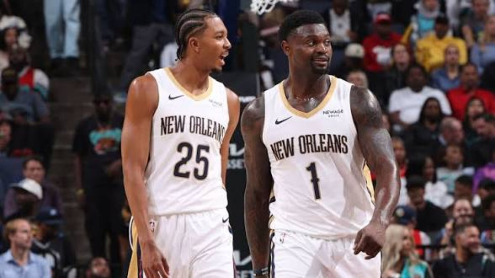
Jeremiah Fears' 19-point, 10-rebound, 10-assist triple-double led a 115–94 win over Golden State. New Orleans still has a 5–10 record, so the challenge is turning young-player breakthroughs into repeatable winning habits.
Zion's paint pressure is the Pelicans' clearest advantage, but opponents will keep sending bodies unless the perimeter spacing punishes it. Fears and Queen need purposeful roles rather than scattered touches. New Orleans can climb if it protects the defensive glass and turns Zion's gravity into repeatable team offense.

Charlotte's 4–9 start leaves a narrow margin for mistakes. A cleaner half-court offense and stronger defensive rebounding would help the Hornets keep competitive games from slipping away.
Miller's shot creation is the centerpiece, while White can give Charlotte another way to pressure the defense off the dribble. Diabaté's energy on the glass has to become a consistent possession advantage. The Hornets need to stop giving away runs through poor transition defense if they want their young talent to translate into wins.

Brooklyn fell 135–123 to Philadelphia and sits 3–10. Development matters, but the Nets also need to build dependable defensive principles and limit the stretches when one opposing run decides a game.
Randle's interior creation and Porter Jr.'s shooting give Brooklyn two credible scoring options. The challenge is using them to create opportunities for Brown and the young guards without compromising defensive effort. The Nets need fewer isolated possessions and a more reliable plan for guarding the ball before the next ranking.
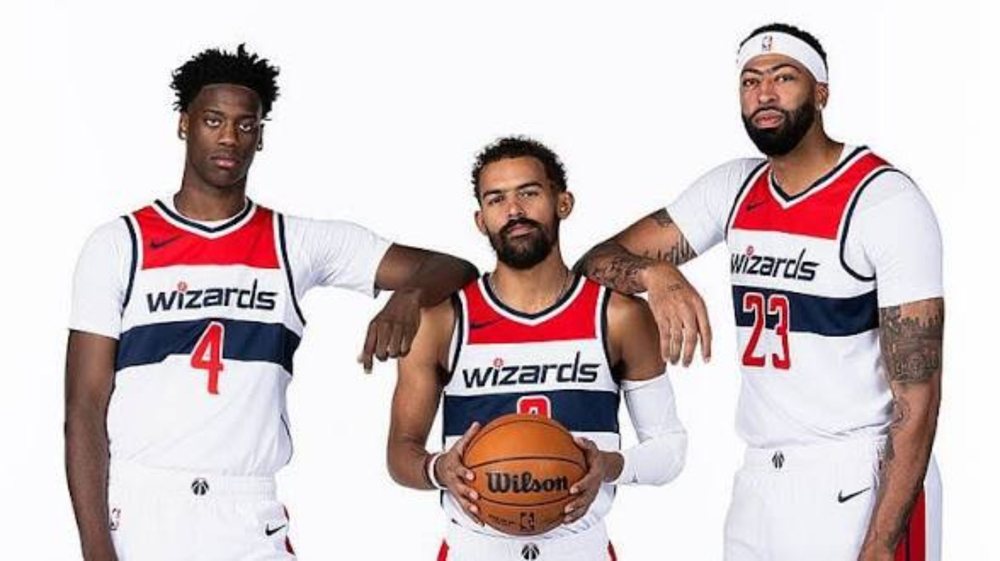
Washington's 136–120 loss to Memphis extended its skid. The Wizards need their young players to learn the difference between producing highlights and executing sound possessions at both ends.
Young can manufacture offense and Davis can erase mistakes at the rim, but Washington needs a reliable bridge between those strengths. Dybantsa's development should be supported by defined touches and clear defensive assignments. The Wizards' biggest opportunity is reducing the easy baskets they concede after turnovers and missed rotations.

Chicago allowed 126 in a loss to Cleveland. Caleb Wilson's development matters, but the team cannot build a foundation without stronger help defense, transition organization and better containment of elite guards.
Wilson's emergence is a bright spot, but Chicago must build a structure around him rather than ask the rookie to rescue every possession. Giddey's passing can create early offense and Buzelis can attack open space. The Bulls' immediate priority is defending the paint and ending possessions with rebounds.

At 1–12, Sacramento is asking Darius Acuff Jr. to create in a difficult environment. The team needs better shot selection, improved spacing and a defensive structure that does not expose its young guard every night.
Acuff's scoring upside gives Sacramento something to build around, but Sabonis has to remain a central facilitator rather than an afterthought. LaVine and Monk can attack the gaps his passing creates. The Kings need better perimeter containment and more disciplined shot selection to turn promising individual nights into victories.
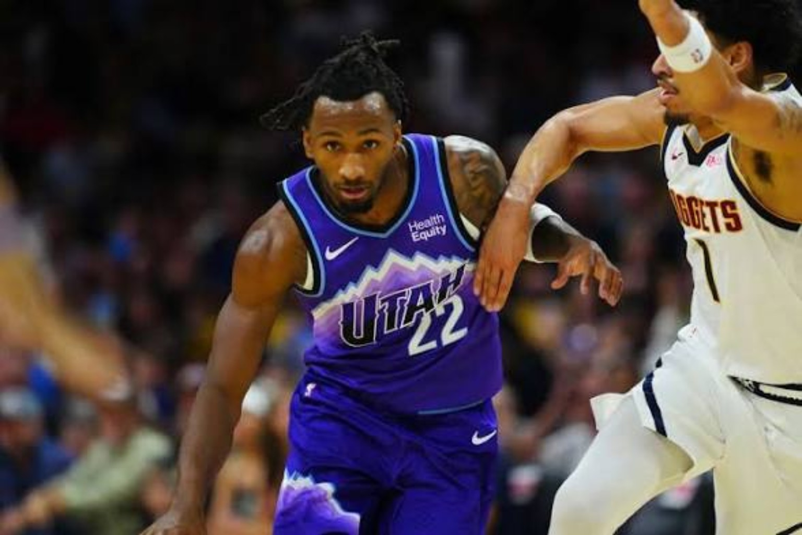
Utah's 1–13 record shows how far the defensive foundation has to travel. Young talent can learn through losses, but there must be measurable improvement in rotations, transition effort and late-clock decision-making.
Markkanen's shooting can pull big defenders away from the rim, and George must use that space to create better looks for others. Peterson's development needs patient, defined opportunities. Utah cannot outscore its defensive mistakes every night; communication and transition coverage are the foundation of any climb.
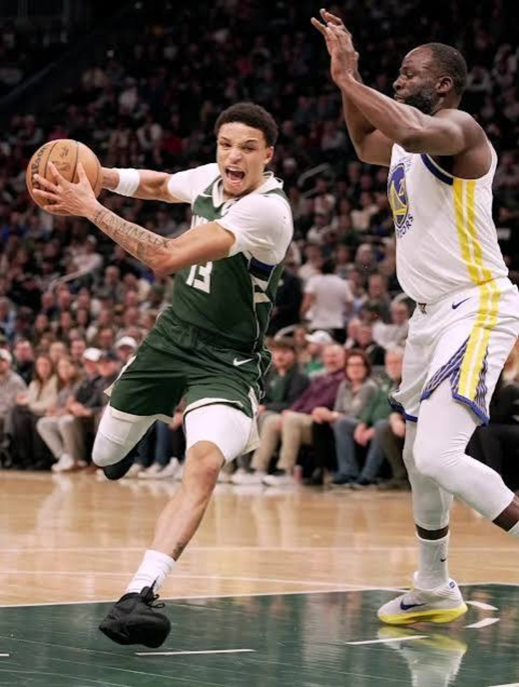
Milwaukee's 1–13 start and prolonged skid demand more than cosmetic fixes. Brayden Burries can develop through meaningful minutes, but the Bucks need clearer roles and more consistent defensive resistance.
Herro can make difficult shots and Ware offers a developing interior target, but Milwaukee needs an offensive identity that produces easier attempts for both. Burries' minutes should emphasize defense, spacing and smart reads. At 1–9, the Bucks must first become competitive possession by possession before discussing a rankings climb.
Luka's offense sets the table for a 12–2 Lakers team. His case rests on the breadth of pressure he applies: scoring against switches, finding cutters against help and dictating late-game possessions. To stay first, the defense must remain competitive around him.
Wembanyama is the strongest two-way counterargument to Luka. San Antonio's 12–2 record is tied to how much space he takes away at the rim, while his offensive skill makes opponents pay for sending extra size. His path to first is sustained dominance on both ends.
Shai's 37 against Sacramento ended Oklahoma City's three-game skid. With injuries stressing the roster, his MVP case includes the difficulty of the assignment, but he must keep teammates involved rather than simply absorb every possession.
Tatum remains fourth because Boston's structure benefits from his scoring and creation. The loss to Orlando is a reminder that the MVP race is about adjusting when a defense changes the terms, not just piling up numbers in wins.
Giannis' partnership with Bam is becoming the center of Miami's resurgence. Five straight wins, including Houston, suggest that their physicality can travel. The remaining question is whether the spacing and late-game offense hold against elite defenses.
Şengün's passing from the middle of the floor gives Houston an offensive identity that cannot be replicated by ordinary post play. Miami's win over the Rockets exposed the need for faster counters when defenses load up around him.
Cade's control and creation have helped Detroit become a legitimate early East factor. His next leap is to make every defensive coverage expensive while keeping turnovers and late-game stagnation under control.
Jokić remains the league's most inventive offensive hub, even as Denver sits 7–5. The loss to Phoenix reinforces why individual excellence and team performance must both matter in an MVP ballot.
Maxey brings speed and pressure to a Philadelphia team sitting 12–3. His case grows when he balances personal scoring bursts with getting Embiid and the other creators involved without surrendering pace.
Curry's movement and shooting still bend the defense even when his box score does not tell the whole story. Golden State's three-game skid without him is evidence of his importance, but availability is part of the MVP equation.
The case for No. 1 is all-around offensive influence, not simply scoring. His 29 against Washington is a signature moment; his passing, rebounding and feel make Memphis harder to defend even when the play is not called for him.
Yaxel scored 28 against New Orleans in a lopsided loss. The individual production is real, but Golden State's struggles show the limits of expecting a rookie to replace Curry's entire offensive ecosystem.
Acuff's difficult assignment is to manufacture offense for a Sacramento team that rarely plays from ahead. We value the shot creation while demanding more efficient decisions and stronger defensive engagement.
Peterson remains fourth on our editorial ballot because of his ability to create a shot and pressure the defense. His next step is sustained efficiency, availability and proof that his offense improves the whole group.
Dybantsa's physical tools and scoring potential are exciting, but his top-five position must be supported by consistent minutes and two-way commitment. The next audit will focus on role and availability.
Wilson is learning to produce within Chicago's unstable team structure. His development should be judged by defensive reads, rebounding and the quality of his attempts as well as raw scoring.
Thomas has the offensive skill to change a game in bursts. To climb, he needs repeatable impact: efficient possessions, active off-ball defense and useful decisions when opponents deny his first move.
Mara's size gives him a pathway to impact as a screener, finisher and paint presence. We need to watch foul discipline, defensive mobility and whether his contributions hold against smaller lineups.
Wagler stays in the ten because he can contribute within a winning environment. The next step is creating advantages independently and sustaining energy on both ends, not only capitalizing on teammates' gravity.
Burries claims No. 10 for scoring and rebounding promise. His outside shot remains a concern, and Kingston Flemings' playmaking plus Trevon Brazile's finishing keep the competition for this position intense.
NOVEMBER 10 EDITION → · NOVEMBER 3 EDITION → · OCTOBER 27 EDITION →
Season-average statistics, current last-five game logs and updated standings are withheld until individually audited; previous editions remain accessible as dated historical records.